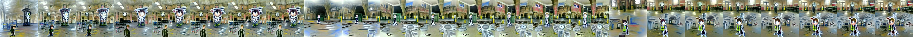

← Async Art — living works · all collections
by Mad Monk · Async Art Master #4531 · hourly · time rule: UTC
Updates each hour in a 24-hour cycle.

24 hourly states (UTC)
Tom Stood Alone Under A Clock In The Deserted Train Station by Mad Monk On Async Art, 24 pieces 3 segments Alternating hourly ... This artwork is 24 pieces, visit Mad Monk's collection at https://async.art/u/Mad Monk/collection and explore it to see all the states. This is Tom in an AI adventure in the train station.
The viewer shows these states from display copies kept with this site (display copies, resized; the originals are on IPFS: the files below). The full-size files are on IPFS; the ones we pin are pinned at Pinata. Each file is stored on IPFS under its CID. The CID belongs to the file, not to any website, so other IPFS gateways can open it too. Three that served our files on 2026-09-28: gateway.pinata.cloud, ipfs.filebase.io, c-ipfs-gw.nmkr.io. Each file below is linked on all three, in the order to try them. Every line says what our own check found: we keep this file pinned: 25; our own copy, pinned by us and verified on upload: 1.
QmVeNC8izw2NCTvNnUZfo4MMHREjMpXuLwGR7LoiscuxMz gateway.pinata.cloud · ipfs.filebase.io · c-ipfs-gw.nmkr.io — we keep this file pinned, checked 2026-09-26 17:46Qme6q2y2JQ88eJXgfY8ojD2tgeyNFcorVBCYmK9Y8QdGDp gateway.pinata.cloud · ipfs.filebase.io · c-ipfs-gw.nmkr.io — we keep this file pinned, checked 2026-09-26 17:46QmZXtegcpHZ3fcJS5xyadnGfUBQQdfEeCPAjytSHURBqsC gateway.pinata.cloud · ipfs.filebase.io · c-ipfs-gw.nmkr.io — we keep this file pinned, checked 2026-09-26 17:46QmXkqeoZ6LNq8tpgXqsx73qBV4oXeukUsfiYSm8DgK5LCr gateway.pinata.cloud · ipfs.filebase.io · c-ipfs-gw.nmkr.io — we keep this file pinned, checked 2026-09-26 17:46Qmb3oaV5tZwTXVrEazRBNxu3nr9wT6rPx46qRWpt7UrwRP gateway.pinata.cloud · ipfs.filebase.io · c-ipfs-gw.nmkr.io — we keep this file pinned, checked 2026-09-26 17:46Qmdpiu4CZiK8uAobzZjqQm5ktoNYSCcuzf9f2beGwDbD4q gateway.pinata.cloud · ipfs.filebase.io · c-ipfs-gw.nmkr.io — we keep this file pinned, checked 2026-09-26 17:46QmS1ppzdvdHpL6VMR1mtQojNcDsdQC9qYpRnhdLaFTHz78 gateway.pinata.cloud · ipfs.filebase.io · c-ipfs-gw.nmkr.io — we keep this file pinned, checked 2026-09-26 17:46QmSrXWRK71wWc4brSvxj1yHsAPgVdrYySM6KNdeHXsmHWa gateway.pinata.cloud · ipfs.filebase.io · c-ipfs-gw.nmkr.io — we keep this file pinned, checked 2026-09-26 17:46QmW6Kns596fhkDt7TVMb9WExGTa7qPJWen3u8LZiWLysVJ gateway.pinata.cloud · ipfs.filebase.io · c-ipfs-gw.nmkr.io — we keep this file pinned, checked 2026-09-26 17:46QmYfMuraUezDrBVAcav1TdQo34zNP8UrBnJyzRNuQEoKAK gateway.pinata.cloud · ipfs.filebase.io · c-ipfs-gw.nmkr.io — we keep this file pinned, checked 2026-09-26 17:46QmbPXYmvMX8kcU5fBdmmFdGRaWBstW4k3A1bLk4PZ571cR gateway.pinata.cloud · ipfs.filebase.io · c-ipfs-gw.nmkr.io — we keep this file pinned, checked 2026-09-26 17:46QmU2835n2HG6C7HsWyhWQc21FSFtvkT4TB3jyZAHYJPSRC gateway.pinata.cloud · ipfs.filebase.io · c-ipfs-gw.nmkr.io — we keep this file pinned, checked 2026-09-26 17:46QmNmfutfETgcLqeYHBwyV2arpvHqopyLjST6VJTSg64qC1 gateway.pinata.cloud · ipfs.filebase.io · c-ipfs-gw.nmkr.io — we keep this file pinned, checked 2026-09-26 17:46Qmc8bu36EzebEkdPCmxs6eHecGdwjGSB6RGz2XLohD1B8o gateway.pinata.cloud · ipfs.filebase.io · c-ipfs-gw.nmkr.io — we keep this file pinned, checked 2026-09-26 17:46QmXyGNoYyEwELFvtrwnY3ykyx9q6euoUNvMwN92Gwhy86x gateway.pinata.cloud · ipfs.filebase.io · c-ipfs-gw.nmkr.io — we keep this file pinned, checked 2026-09-26 17:46QmWmS1TBegatpwp1vm6Vq1ZfJu4UCzXamcmMirHWBqU36W gateway.pinata.cloud · ipfs.filebase.io · c-ipfs-gw.nmkr.io — we keep this file pinned, checked 2026-09-26 17:46QmPpjGYBxXURLDzjE9SqM8xdrTkDtRx5gSV4rDM1x4rCXK gateway.pinata.cloud · ipfs.filebase.io · c-ipfs-gw.nmkr.io — we keep this file pinned, checked 2026-09-26 17:46QmNd1xmSPsuqL1QWzcLLvsey8CZeUnnLr2UvWskBAdCbV2 gateway.pinata.cloud · ipfs.filebase.io · c-ipfs-gw.nmkr.io — we keep this file pinned, checked 2026-09-26 17:46QmaL72B4eHP6XeevS7ZN84Zscu5Q7N4TqRHAX5yhscAr2k gateway.pinata.cloud · ipfs.filebase.io · c-ipfs-gw.nmkr.io — we keep this file pinned, checked 2026-09-26 17:46QmNuTDgHf2WbHTCXqu7VU1nksueJf7CAKdegnmPNpot6DQ gateway.pinata.cloud · ipfs.filebase.io · c-ipfs-gw.nmkr.io — we keep this file pinned, checked 2026-09-26 17:46QmVx553diXZ7cYDQbRHvM5TuyFkwWpcZLcaGJADFu25ZXG gateway.pinata.cloud · ipfs.filebase.io · c-ipfs-gw.nmkr.io — we keep this file pinned, checked 2026-09-26 17:46QmXV3bJFzRYHV6a23kRhyUhbAqX9jCzpzpARJLYk15o4jJ gateway.pinata.cloud · ipfs.filebase.io · c-ipfs-gw.nmkr.io — we keep this file pinned, checked 2026-09-26 17:46QmQEkxT6gepvc5ESfzq5uEExKmvsDU9Upnx9QPPqz2gEYQ gateway.pinata.cloud · ipfs.filebase.io · c-ipfs-gw.nmkr.io — we keep this file pinned, checked 2026-09-26 17:46QmRUvuMLbGCivaAqHvB93jKrxSHh8AdhtXMHdqiRYDnVwz gateway.pinata.cloud · ipfs.filebase.io · c-ipfs-gw.nmkr.io — we keep this file pinned, checked 2026-09-26 17:46bafybeia7uyc7tqih7vqzcx74wxriwkxlrizm6n3byjiacaq6qkaferudxu gateway.pinata.cloud · ipfs.filebase.io · c-ipfs-gw.nmkr.io — our own copy, pinned by us and verified on upload, checked 2026-09-22Qmc94uDU54rATe1J6ydQX3f2mKMSfD3LrSjfrw5tKYSbB1 gateway.pinata.cloud · ipfs.filebase.io · c-ipfs-gw.nmkr.io — we keep this file pinned, checked 2026-09-26 17:46QmVeNC8izw2NCTvNnUZfo4MMHREjMpXuLwGR7LoiscuxMz gateway.pinata.cloud · ipfs.filebase.io · c-ipfs-gw.nmkr.io — we keep this file pinned, checked 2026-09-26 17:46QmVeNC8izw2NCTvNnUZfo4MMHREjMpXuLwGR7LoiscuxMz gateway.pinata.cloud · ipfs.filebase.io · c-ipfs-gw.nmkr.io — we keep this file pinned, checked 2026-09-26 17:46Qme6q2y2JQ88eJXgfY8ojD2tgeyNFcorVBCYmK9Y8QdGDp gateway.pinata.cloud · ipfs.filebase.io · c-ipfs-gw.nmkr.io — we keep this file pinned, checked 2026-09-26 17:46QmZXtegcpHZ3fcJS5xyadnGfUBQQdfEeCPAjytSHURBqsC gateway.pinata.cloud · ipfs.filebase.io · c-ipfs-gw.nmkr.io — we keep this file pinned, checked 2026-09-26 17:46QmXkqeoZ6LNq8tpgXqsx73qBV4oXeukUsfiYSm8DgK5LCr gateway.pinata.cloud · ipfs.filebase.io · c-ipfs-gw.nmkr.io — we keep this file pinned, checked 2026-09-26 17:46Qmb3oaV5tZwTXVrEazRBNxu3nr9wT6rPx46qRWpt7UrwRP gateway.pinata.cloud · ipfs.filebase.io · c-ipfs-gw.nmkr.io — we keep this file pinned, checked 2026-09-26 17:46Qmdpiu4CZiK8uAobzZjqQm5ktoNYSCcuzf9f2beGwDbD4q gateway.pinata.cloud · ipfs.filebase.io · c-ipfs-gw.nmkr.io — we keep this file pinned, checked 2026-09-26 17:46QmS1ppzdvdHpL6VMR1mtQojNcDsdQC9qYpRnhdLaFTHz78 gateway.pinata.cloud · ipfs.filebase.io · c-ipfs-gw.nmkr.io — we keep this file pinned, checked 2026-09-26 17:46QmSrXWRK71wWc4brSvxj1yHsAPgVdrYySM6KNdeHXsmHWa gateway.pinata.cloud · ipfs.filebase.io · c-ipfs-gw.nmkr.io — we keep this file pinned, checked 2026-09-26 17:46QmW6Kns596fhkDt7TVMb9WExGTa7qPJWen3u8LZiWLysVJ gateway.pinata.cloud · ipfs.filebase.io · c-ipfs-gw.nmkr.io — we keep this file pinned, checked 2026-09-26 17:46QmYfMuraUezDrBVAcav1TdQo34zNP8UrBnJyzRNuQEoKAK gateway.pinata.cloud · ipfs.filebase.io · c-ipfs-gw.nmkr.io — we keep this file pinned, checked 2026-09-26 17:46QmbPXYmvMX8kcU5fBdmmFdGRaWBstW4k3A1bLk4PZ571cR gateway.pinata.cloud · ipfs.filebase.io · c-ipfs-gw.nmkr.io — we keep this file pinned, checked 2026-09-26 17:46QmU2835n2HG6C7HsWyhWQc21FSFtvkT4TB3jyZAHYJPSRC gateway.pinata.cloud · ipfs.filebase.io · c-ipfs-gw.nmkr.io — we keep this file pinned, checked 2026-09-26 17:46QmNmfutfETgcLqeYHBwyV2arpvHqopyLjST6VJTSg64qC1 gateway.pinata.cloud · ipfs.filebase.io · c-ipfs-gw.nmkr.io — we keep this file pinned, checked 2026-09-26 17:46Qmc8bu36EzebEkdPCmxs6eHecGdwjGSB6RGz2XLohD1B8o gateway.pinata.cloud · ipfs.filebase.io · c-ipfs-gw.nmkr.io — we keep this file pinned, checked 2026-09-26 17:46QmXyGNoYyEwELFvtrwnY3ykyx9q6euoUNvMwN92Gwhy86x gateway.pinata.cloud · ipfs.filebase.io · c-ipfs-gw.nmkr.io — we keep this file pinned, checked 2026-09-26 17:46QmWmS1TBegatpwp1vm6Vq1ZfJu4UCzXamcmMirHWBqU36W gateway.pinata.cloud · ipfs.filebase.io · c-ipfs-gw.nmkr.io — we keep this file pinned, checked 2026-09-26 17:46QmPpjGYBxXURLDzjE9SqM8xdrTkDtRx5gSV4rDM1x4rCXK gateway.pinata.cloud · ipfs.filebase.io · c-ipfs-gw.nmkr.io — we keep this file pinned, checked 2026-09-26 17:46QmNd1xmSPsuqL1QWzcLLvsey8CZeUnnLr2UvWskBAdCbV2 gateway.pinata.cloud · ipfs.filebase.io · c-ipfs-gw.nmkr.io — we keep this file pinned, checked 2026-09-26 17:46QmaL72B4eHP6XeevS7ZN84Zscu5Q7N4TqRHAX5yhscAr2k gateway.pinata.cloud · ipfs.filebase.io · c-ipfs-gw.nmkr.io — we keep this file pinned, checked 2026-09-26 17:46QmNuTDgHf2WbHTCXqu7VU1nksueJf7CAKdegnmPNpot6DQ gateway.pinata.cloud · ipfs.filebase.io · c-ipfs-gw.nmkr.io — we keep this file pinned, checked 2026-09-26 17:46QmVx553diXZ7cYDQbRHvM5TuyFkwWpcZLcaGJADFu25ZXG gateway.pinata.cloud · ipfs.filebase.io · c-ipfs-gw.nmkr.io — we keep this file pinned, checked 2026-09-26 17:46QmXV3bJFzRYHV6a23kRhyUhbAqX9jCzpzpARJLYk15o4jJ gateway.pinata.cloud · ipfs.filebase.io · c-ipfs-gw.nmkr.io — we keep this file pinned, checked 2026-09-26 17:46QmQEkxT6gepvc5ESfzq5uEExKmvsDU9Upnx9QPPqz2gEYQ gateway.pinata.cloud · ipfs.filebase.io · c-ipfs-gw.nmkr.io — we keep this file pinned, checked 2026-09-26 17:46QmRUvuMLbGCivaAqHvB93jKrxSHh8AdhtXMHdqiRYDnVwz gateway.pinata.cloud · ipfs.filebase.io · c-ipfs-gw.nmkr.io — we keep this file pinned, checked 2026-09-26 17:46async.art · OpenSea · Etherscan
Generated archive pages. Content identifiers point to the public IPFS network.